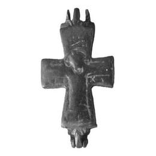
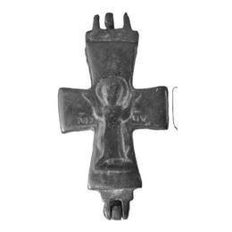

Catalog › CE-0160 · SAM2026-6
Encolpion bivalv de bronz, cat. 6, Muzeul Samsun
sec. XI (1001–1100) · loc necunoscut · Muzeul Samsun (Samsun Müzesi), Turcia, inv. Müze Ark. Env. No 20-2/1973
double-sided reliquary cross (enkolpion), bronz; c. XI (1001–1100); find spot unknown; kept at Muzeul Samsun (Samsun Müzesi), Turcia.




Identificare
- Categorie
- Encolpion bivalv (relicvar)
- Material
- Bronz
- Tehnică
- Turnare în relief; Gravare (incizie)
- Dimensiuni
- Î 42 × L 22 × Gr 6 mm
Iconografie
- Descriere avers
- Hristos răstignit, cu nimb, cu prelungirea crucii în spatele capului și semnul „X”; balamalele sunt ornamentate în față ca frunză de lotus; pe brațele orizontale IC XC.
- Revers
- Maica Domnului Orantă
- Descriere revers
- Maica Domnului orantă, cu nimb; pe brațele orizontale MP ΘY.
- Inscripții
- IC XC; MP ΘY [Μήτηρ Θεοῦ]
- Limba
- Greacă
Datare și atribuire
- Datare
- sec. XI (1001–1100)
- Centru
- Necunoscut
- Tipologie
- Pitarakis 2006, forma tip I
Descoperire
- Context
- Colecție (fără context)
- Coordonate
- 41.2867° N, 36.3300° E
- Precizia locului
- Loc de păstrare (loc de descoperire incert)
Păstrare și referințe
- Colecție
- Muzeul Samsun (Samsun Müzesi), Turcia
- Nr. inventar
- Müze Ark. Env. No 20-2/1973
- Bibliografie
- O. A. Şirin, Samsun Müzesinden Röliker (Enkolpion) Haçlar / Reliquary (Enkolpion) Crosses from the Samsun Museum, în „TRMuseum” (Troy Museum Journal), 5, martie 2026, p. 51–103 [Şirin 2026], p. 68, cat. nr. 6, reprodusă la Resim/Çizim 6 (p. 83). Acces liber: https://dergipark.org.tr/tr/pub/troymuseum/article/1855384
- Figura
- Resim/Çizim 6
- Planșe
- Şirin 2026, p. 83
- Observații
- Datare după Şirin: sec. XI. Intrat în muzeu prin confiscare, 10/10/1973. Locul descoperirii nu e cunoscut cu precizie; punctul de pe hartă marchează locul de păstrare (Muzeul Samsun), nu locul descoperirii. Coordonate: nu sunt date în sursă.
Citare: Corpus Encolpiorum, CE-0160, Encolpion bivalv de bronz, cat. 6, Muzeul Samsun, --root/piese/SAM2026-6/ (accesat 2026-10-20).